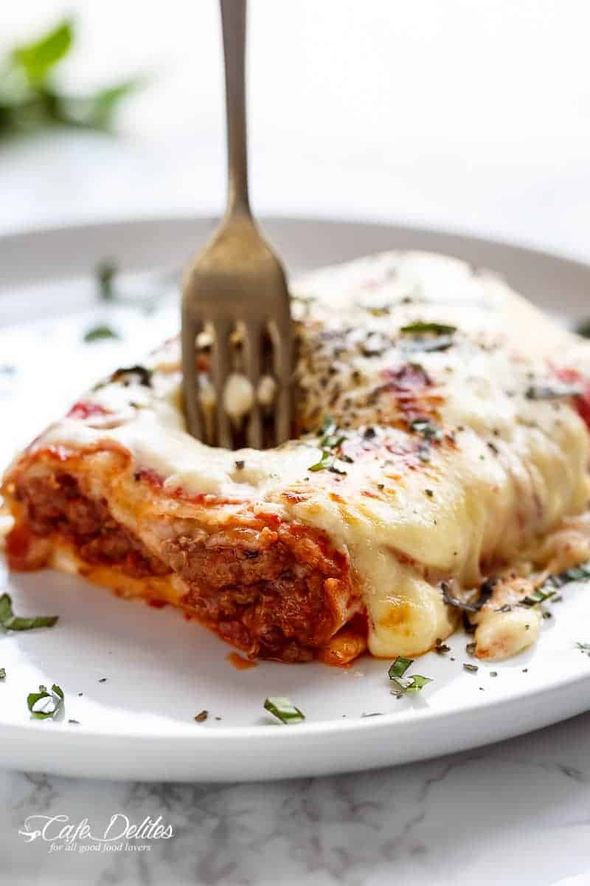

Easy lasagna stuffed burrito

these easy lasagna stuffed burritos are a family favourite! stuffed with lasagna meat sauce, lasagna flavours, and plenty of melted mozzarella cheese!
Welcome to lazy persons lasagna 101. This is a recipe I created many years ago, when we’ve all been craving lasagna, but I haven’t have the time to layer, or wait around your oven for half an hour to an hour. This is a 10-15 minute lasagna, without the effort — or the pasta. And you don’t miss the pasta when lasagna meat is enveloped in fluffy tortillas.
Making these again this last weekend for the zillionth time, my family were ALL OVER ME to post these. I googled and googled and found so many BURRITO LASAGNA’S (as in, layers of burritos in lasagna-style assembling), but NO lasagna stuffed inside a burrito. Am I really the only one that does this?
Ingredients
Burritos
- 1 tablespoon olive oil
- 1 onion , diced
- 2-3 cloves garlic , minced
- 1 pound (500 grams) ground lean beef
- 12 ounces (350 grams) ground sausage
- 21 ounces (600 grams) bottle tomato puree / sauce, or passata (or marinara sauce), divided
- 4 tablespoons tomato paste
- 2 teaspoons beef bouillon powder
- Salt and pepper , to taste
- Pinch of dried oregano
- Pinch of dried basil
- 6-8 large tortilla wraps (white or while wheat)
- 7 ounces (200 grams) fresh mozzarella cheese, thinly sliced
- 3/4 cup shredded mozzarella cheese
White sauce (optional)
- 2 tablespoons butter , chopped
- 2 tablespoons all purpose or plain flour
- 1/4 teaspoon salt
Instructions
Preheat oven to broil or grill settings on medium heat. Lightly spray a baking sheet / tray with cooking oil spray; set aside.
Meat sauce
- Heat the olive oil in a large pan or skillet. Sauté onions and garlic until translucent and fragrant over low-medium heat.
- Add in the ground beef and sausage; fry until browned, while breaking the meat up with a wooden spoon.
- Stir in 3/4 of the tomato puree. Add the tomato paste, bouillon powder, salt and pepper (to taste), and dried herbs. Bring to a simmer until sauce thickens. Remove from heat and allow to cool slightly (the sauce will be thicker than normal lasagne sauce to avoid wetting and ripping the tortillas).
- While cooling, prepare white sauce (optional)
White sauce (optional)
- Melt butter in a medium saucepan over medium-high heat. Add flour; cook, quickly stirring for 1 to 2 minutes. Remove from heat. Gradually add milk, starting with 1/4 cup, whisking constantly, until mixture is smooth. Return to a low heat and cook, stirring continuously with a wooden spoon, for about 10 minutes, or until sauce thickens and comes to a boil. (It should coat the back of a wooden spoon.) Remove from heat.
Assemble
Heat tortillas in microwave for one minute until soft. Place two slices of mozzarella onto the tortilla; spread about 1/4 cup of meat on each tortilla, and top with 2 more slices of mozzarella. Fold over tortilla ends, and roll up. Pour remaining tomato puree/sauce over the top (about 2 tablespoons each burrito), spoon white sauce over the tomato sauce, and top with the shredded mozzarella. Place burritos on prepared baking sheet / tray; bake burritos until cheese has melted and the tortillas are golden. Serve immediately.